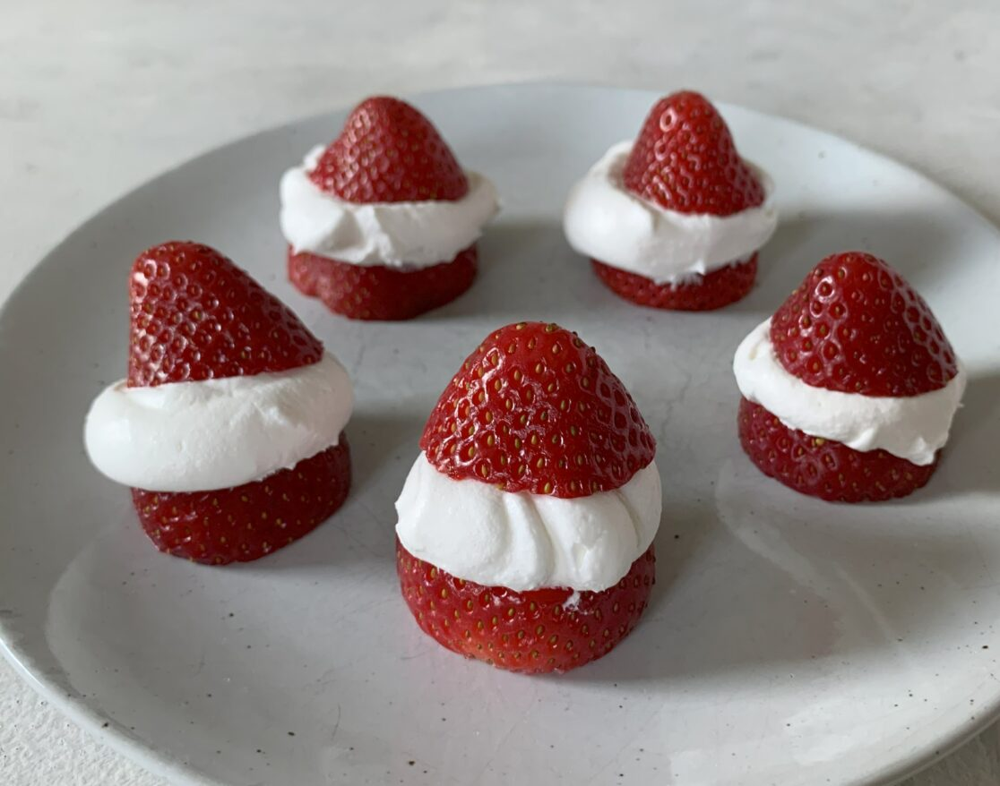

Black Bean & Corn Salsa
By Chef Megan McCarthy

Cook once, eat three different ways! This
black bean & corn salsa can be transformed
into both a hummus or a stovetop soup
Ingredient List
- 1 can black beans (15 ounces), rinsed and drained
- 1 cup of corn, fresh or frozen
- 1 orange, yellow or red bell pepper, seeded and diced
- 1 medium fresh tomato, seeded and diced
- 1 small red onion, diced
- 1 cup of shredded or diced radish
- 1 jalapeño, seeded and finely chopped
- Sea salt and fresh cracked pepper to taste
- ¼ cup chopped fresh cilantro
Instructions
- In large bowl, add ingredients to combine.
- Spoon mixture onto lettuce cups or serve with
tortilla chips.
- Garnish with additional cilantro leaves to serve.
Strawberry Santas

Strawberry Santas
By Emily Holdorf
Create these 2-ingredient strawberry
Santas for a festive snack!
Ingredient List
- Strawberries, washed & pat dry
- Whipped cream or whipped topping
Instructions
- Cut the stem off of the strawberry to create
a flat surface for the strawberry to stand up.
- Slice the strawberry in half to create the
bottom “body” part and top “hat” part of the Santa.
- Place a dollop of whipped cream on the bottom
part of the strawberry and top with the top “hat.”
Cherry Lime Sorbet

By Emily Holdorf
Craving a refreshing treat without the
fuss? This sorbet recipe is so simple,
you'll only need two ingredients. No ice
cream maker needed! Just cherries and
limes come together in a burst of flavor
that's perfect for summer.
Ingredient List
- 2 cups sweet cherries
- 2 limes
Instructions
- Remove the stems and pits of cherries.
- Place cherries on a parchment lined
baking sheet. Spread evenly. Place
in freezer for 2-3 hours. Once cherries
are frozen transfer into an airtight
freezer bag or container and leave in
freezer overnight
- When ready to enjoy sorbet, take the
frozen cherries and place in a food
processor. Juice the 2 limes on top of
the cherries. Pulse to blend cherries
into desired sorbet consistency. You
may need to scrape down the sides
occasionally to ensure even blending.
- Serve immediately for a soft-serve-like
consistency. If you prefer a harder
sorbet, place in an airtight container
and put in the freezer until desired
consistency is reached.
Recipe Notes:
- No cherry pitter? No problem! Use a
metal straw to make quick work of those pits.
- Keep extra frozen cherries on hand for
instant sorbet anytime.